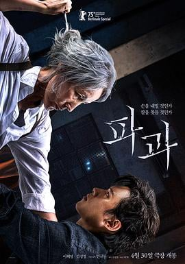

5.9
破果
Pagwa
2025
韩国
评分 5.9
导演:
闵奎东
演员:
李慧英 / 金圣喆 / 金武烈 / 梁奏美 / 申诗雅 / 延宇振 / 金康宇
类型:
动作,惊悚,犯罪
剧情简介
六十岁的“爪角”（李慧英 饰）是一名经验老到的职业杀手，江湖里的人对她又惧又敬。她的生活沉默、规律、冷硬，却在悄无声息的夜色中藏着随时可以爆发的锋芒。岁月在她的脸上刻下痕迹，却未能削弱她的动作精准度——每一次潜行、每一次出手，都像是一种经过岁月雕刻的仪式。某天，一名年轻男子金善宇（金圣喆 饰）闯进她的世界。他替她做着生活里从未有人为她做过的细碎小事：修理损坏的鞋跟、提前为她点好常喝的咖啡、在她的旧公寓门口留下小卡片。起初，爪角不以为意，但这些柔软的关怀正在悄悄瓦解她防备一生的心墙。影片在暴力与温度之间不断切换：爪角在夜市巷道中追踪敌人时，镜头昏暗而冷硬；而当她与善宇坐在路边摊前吃着热气腾腾的鱼糕，气氛又变得轻柔、近乎陌生。她开始怀疑：一个杀手是否能拥有亲密与温暖？在逐渐靠近的关系里，她的世界第一次出现动摇。然而，危险从未真正远离。过去的同行、旧案的余烬、新敌人的盯上，都让她意识到自己不可能一直停在这个温柔的间隙里。善宇的出现更让她陷入选择：继续做毫不留情的杀手，还是尝试拥有一个可能会让她失去锋芒的“普通生活”？故事以紧凑的节奏推进，打斗场面粗粝而干脆，人物情感却细腻而深沉。爪角的孤独、善宇的温和、城市的冷光，都在镜头里交织成一种复杂的魅力，让观众既感受到杀手世界的危险，也看见一个女人在暮年仍努力抓住生命里最后一丝光亮的模样。